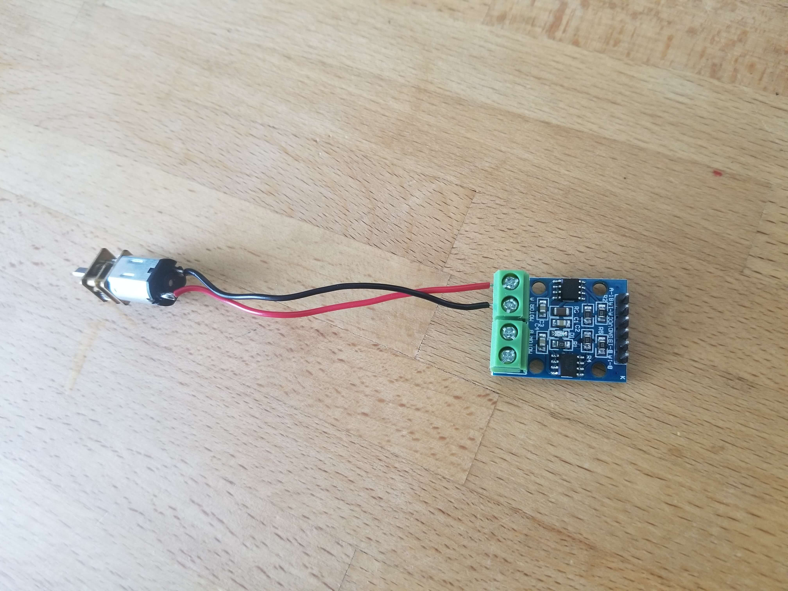
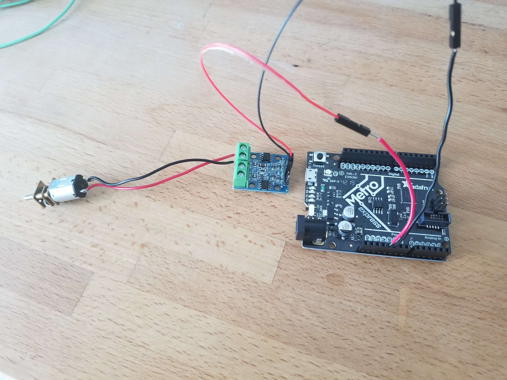

Driving a motor with the L9110
For this workshop, please collect the following:
- Metro M0 Express microcontroller
- Breadboard
- DC motor (N20 or Canon motor)
- L9110
Buzzers
Motor Driving
We'll be using the L9110 motor driver to make it easier to control our motors in two directions. See the L9110 Data Sheet for more information on this component.
First, screw your motor leads into the screw terminals. Orientation (red/black) does not matter. Use the port for Motor A.
Next, connect GND and 5V from the Metro to the L9110 (GND and VCC). For each connection, combine a pin-pin wire and a socket-socket wire to make a pin-socket wire. You can make these connections directly to the Metro, or via breadboard.
In the same way, connect the A-1A and A-1B pins of the L9110 to pins 2 and 3 of the Metro.

Now plug in your USB cable and upload the following code to your Metro:
const int A1A = 2; // define pin 2 for A-1A
const int A1B = 3; // define pin 3 for A-1B
void setup() {
pinMode(A1A, OUTPUT); // specify these pins as outputs
pinMode(A1B, OUTPUT);
}
void loop() {
digitalWrite(A1A, LOW); // specify a direction by setting one pin high and the other low
digitalWrite(A1B, HIGH);
delay(2000); // allow the motor to run for 2 seconds
digitalWrite(A1A, HIGH); // switch the direction of the motor
digitalWrite(A1B, LOW);
delay(2000); // allow the motor to run for 2 seconds
digitalWrite(A1A, LOW); // specify a direction by setting one pin high and the other low
digitalWrite(A1B, LOW);
delay(5000); // turn the motor off for 5 seconds
}
Once you're comfortable controlling your motor with the L9110, you should try driving a motor with a transistor.